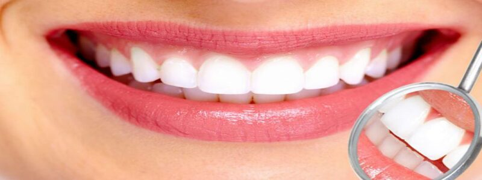
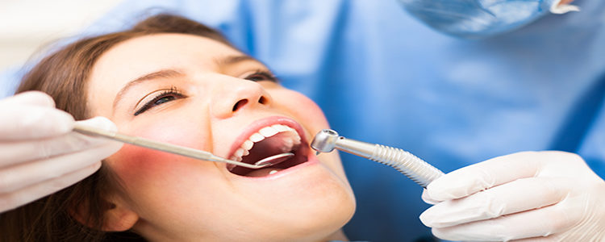
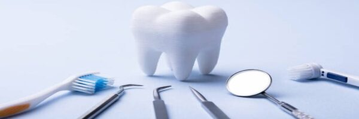

Especialidades Dentales Segovia
Este apartado llamado "blog" nos será de uso para notas importantes sobre nuestra salud bucal que el doctor nos quiera hacer saber, cualquier tipo de información que el doctor considere, aquí la pondrá.
Importancia de la Limpieza ("Profilaxis")

A veces no somos conscientes de los beneficios de tener o mantener una boca limpia y sana. Pensamos que con cepillarnos los dientes todos los día nos vale, pero la limpieza dental nos ayuda a prevenir muchos problemas.
Además, un tratamiento de limpieza dental no es un procedimiento complejo o doloroso. Al revés, es un proceso rápido y sencillo necesario para que consigas una correcta higiene bucal.
Así que, para que dejes de evitar ir al dentista y luego acarrees con graves problemas de salud bucodental, te vamos a hablar de qué es la limpieza bucal, cada cuánto debes hacerte una y las ventajas que tiene.

¿Qué es una limpieza dental o limpieza bucal?
La limpieza dental, también conocida como profilaxis dental, es uno de los tratamientos dentales más demandados. Este es un procedimiento que se hace con el objetivo de evitar ciertas enfermedades bucales.
Su fin es eliminar el sarro y las manchas acumuladas en los dientes. Aunque eso sí, no debe confundirse con el blanqueamiento dental, ya que la limpieza dental no altera el color de los dientes.
La limpieza bucal debe ser llevada a cabo por un profesional y es eficaz para cuidar los dientes y las encías. Pero, eso sí, no debemos olvidar la limpieza diaria, es decir, el cepillado diario de dientes, sobre todo el de antes de dormir, como dice nuestro director Pablo Rodas. Así como usar el hilo dental y visitar periódicamente a tu dentista de confianza.

Si me cepillo los dientes a diario, ¿debo hacerme una limpieza dental?
El principal objetivo o la principal función que cumple la limpieza dental es prevenir enfermedades, además de eliminar las manchas o la placa de sarro.
Es decir, las limpiezas bucales ayudan a eliminar el sarro que se acumula en la línea de nuestras encías o el cuello de nuestros dientes.
Y…¿qué es el sarro?
Son colonias de bacterias que han sido cubiertas por minerales (placa calcificada), lo que ha causado que se endurezca y se adhiera con fuerza al diente.
Además, las acumulaciones de sarro se pueden llegar a formar con gran rapidez y estas no suelen desparecer con el cepillado diario, solo pueden eliminarse mediante una adecuada limpieza bucal.